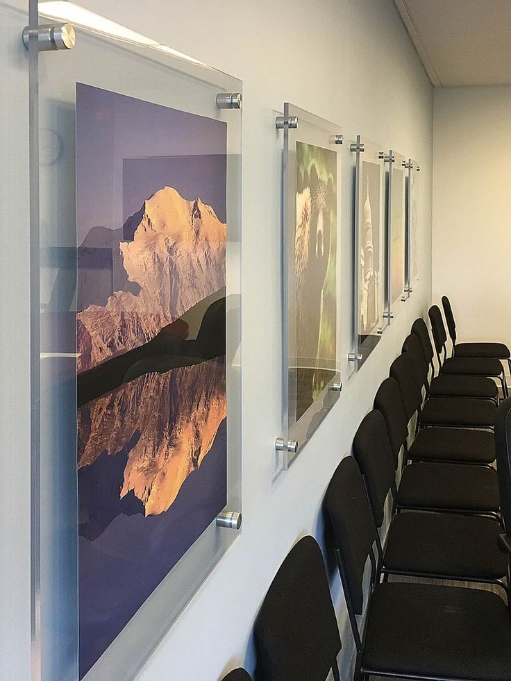

About Our Perspex Sheets
At Tensorgrid Ltd, we supply 100% virgin PMMA cast acrylic sheets (Perspex) that are of higher quality than most standard market offerings, which often contain only 70% virgin PMMA or recycled materials. Our sheets offer superior clarity, strength, and durability, making them ideal for a wide range of applications, from signage to partitions, displays, and protective screens.
Sheet Specifications
Key Features
- Superior clarity and smooth finish
- Durable and impact-resistant
- High-quality 100% virgin PMMA
- Lightweight and easy to fabricate
- Resistant to UV and weathering
Clear Perspex Sheets
Crystal-clear acrylic sheets with excellent optical quality, ideal for applications requiring superior transparency and light transmission.
- Superior clarity and bright finish
- Excellent light transmission
- High impact resistance
- Available from 2mm to 10mm thickness
Applications: Windows, Skylights, Displays, Protective screens, Signage
Colored Perspex Sheets - 3mm
Premium colored acrylic sheets available in 3mm thickness, perfect for signage, decorative applications, and interior accents.
Available Colors: Light Blue, Red, Green, Yellow, Black, White, Opal White, Bronze, Orange, Dark Blue
- Vibrant color options
- Lightweight and easy to work with
- Ideal for signage and creative applications
- UV resistant for outdoor use
Applications: Signage and displays, Decorative panels, Retail installations, Interior accents
Colored Perspex Sheets - 4mm & 6mm
Thicker colored acrylic sheets providing enhanced durability and structural strength for more demanding applications.
4mm Colored Sheets
Available Colors: White, Opal White
- Increased durability over 3mm
- Better impact resistance
- Ideal for partitions and protective barriers
Applications: Interior partitions, Protective barriers, Furniture, Display cases
6mm Colored Sheets
Available Color: Bronze
- Maximum strength and durability
- Premium appearance
- Excellent for high-traffic areas
Applications: Heavy-duty partitions, Premium installations, Decorative features
Why Choose Our Perspex Sheets?
- 100% virgin PMMA for better strength and clarity
- Higher durability than recycled or 70% virgin sheets
- Wide range of colors and thicknesses
- Easy to cut, shape, and install
- Suitable for both indoor and outdoor use